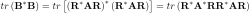
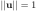
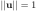

Next: Vector and Matrix Differentiation Up: algebra Previous: Vector Norms
The norm of an  matrix
matrix  is any function that maps
to a real number that satisfies the following
required properties:
is any function that maps
to a real number that satisfies the following
required properties:
by
in the first expression.
In addition to the three required properties for matrix norms, some of them also satisfy these additional properties (not necessarily satisfied by other matrix norms):
We now consider some commonly used matrix norms.
If we treat the elements of are the elements of
an -dimensional vector, then the p-norm of this vector can be used as
the p-norm of :
 is the absolute sum of all elements of :
is the absolute sum of all elements of :
 is the maximum norm, the maximum absolute
value among all elements of :
,
is the ith non-zero eigenvalues of the positive, semi-definite matrix
, and
the ith singular
value of (
is the maximum norm, the maximum absolute
value among all elements of :
,
is the ith non-zero eigenvalues of the positive, semi-definite matrix
, and
the ith singular
value of ( ). (This Frobenius norm
is implemented in Matlab by the function
). (This Frobenius norm
is implemented in Matlab by the function norm(A,'fro').)
 :
:
 |
 |
 | |
|
 .
.
The natural norm of matrix induced by
(subordinate to) the vector norm  is defined as
is defined as
 is
is

|
|||
 |

 is arbitrary, we let
and get
is arbitrary, we let
and get
 is the eigenvector corresponding
to the greatest eigenvalue of
:
is the eigenvector corresponding
to the greatest eigenvalue of
:
and
 are linearly dependent), then the equality of the
submultiplicativity property holds. To see this, consider
are linearly dependent), then the equality of the
submultiplicativity property holds. To see this, consider
 (252)
(252)
Consider in particular the three natural matrix norms corresponding to the three vector p-norms :
is the maximum absolute column sum:
norm(A,1).
Proof: The 1-norm of vector is
, we have
|
|||
|
has the maximum absolute sum
and is normalized (as required in the definition) with
 , we have
, we have
 (254)
(254)
 is maximized, if we choose
, the kth unit
vector (normalized):
is indeed
. We therefore have
is maximized, if we choose
, the kth unit
vector (normalized):
is indeed
. We therefore have
is the maximum absolute
row sum:
norm(A,inf).
Proof: When , is normalized if
. The norm of vector
 is:
is:
 (261)
(261)
, square root of the
greatest eigenvalue of
, i.e., its spectral
radius
:
norm(A,2) or simply
norm(A).
Proof:
First we consider the eigenequation of :
 is a unitary (orthogonal if real)
matrix.
is a unitary (orthogonal if real)
matrix.
Next, consider the norm of
 :
:
|
|||
|
 is a unitary transform of
with the 2-norm
conserved.
is a unitary transform of
with the 2-norm
conserved.
The right-hand side of the equation above is a weighted average of
the  eigenvalues
, which is maximized
if they are weighted by a normalized vector
with
, by which the greatest eigenvalue
is maximally weighted while all others are weighted by 0:
eigenvalues
, which is maximized
if they are weighted by a normalized vector
with
, by which the greatest eigenvalue
is maximally weighted while all others are weighted by 0:
Out of the three matrix norms defined above, the spectral norm is the
only one that is unitary invariant, i.e., it is conserved or
invariant under any unitary transform
:
|
|||
|
Example
|
|||
|
are
is
 is
, which satisfies the equality
.
is
, which satisfies the equality
.
The Shatten norm is defined based on the singular values  of
or the eigenvalues
of
:
of
or the eigenvalues
of
:
 values:
values:
 (275)
(275)
All matrix norms defined above are equivalent according to the theorem previously discussed.
 but one
are zero, and the equality on the right holds when all are
the same.
but
one are zero, and the equality on the right holds when all
are the same.
but one
are zero, and the equality on the right holds when all elements are
the same.
is
but one
are zero, and the equality on the right holds when all are
the same.
but
one are zero, and the equality on the right holds when all
are the same.
but one
are zero, and the equality on the right holds when all elements are
the same.
is
Theorem: The spectral radius of a matrix is bounded by its matrix norm:
Proof: Let  and be an eigenvalue and the
corresponding normalized eigenvector of a square matrix ,
i.e.,
and .
As the induced norm, satisfies
and be an eigenvalue and the
corresponding normalized eigenvector of a square matrix ,
i.e.,
and .
As the induced norm, satisfies
is an arbitrary eigenvalue, it can be the one with the
maximum absolute value , i.e., the spectral radius  .
We therefore have
.
.
We therefore have
.
Theorem:
and  by the eigenvalue and the
corresponding eigenvector of respectively, i.e.,
by the eigenvalue and the
corresponding eigenvector of respectively, i.e.,
 (286)
(286)
Theorem: A square matrix is convergent, i.e.,
, if and only if
.
The proof of this theorem can be found here.